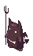
Faithful first
Focused on the pre-renewal 2008 experience, from maps and jobs to combat and social systems.
Open source · Pure Go
Goro is an MIT-licensed reimplementation of a pre-Renewal MMORPG client, built for preservation, experimentation, and fun.
Free and open source · MIT Licensed
About the project
Goro rebuilds the classic client experience in readable, reusable Go—without carrying over the limitations of the original executable.

Focused on the pre-renewal 2008 experience, from maps and jobs to combat and social systems.
Built without CGO for straightforward cross-compilation and compact, self-contained releases.
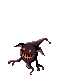
Powered by GoGPU, with Vulkan and Wayland support, high-refresh displays, and a themeable UI.
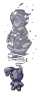
Designed from the start as a reusable client foundation that people can study, reshape, and use to build an MMO of their own.
Showcase
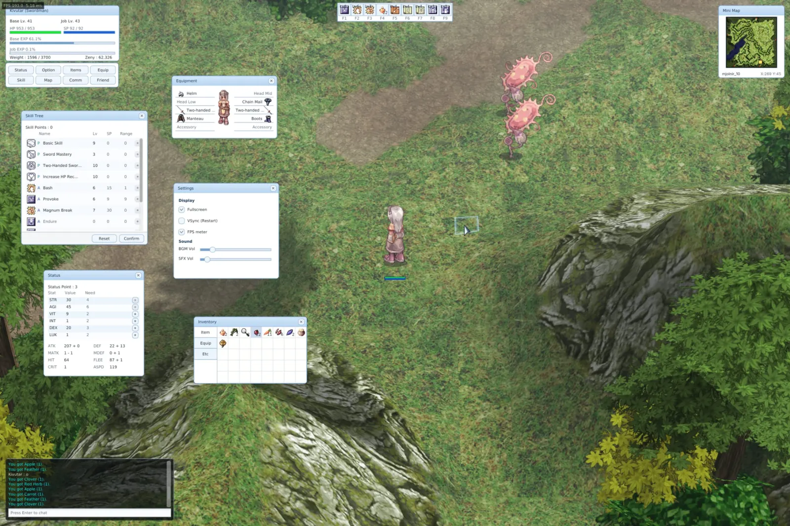
Every game window is rebuilt as a clean gogpu/ui widget tree, using its retained-mode model and layout system for consistent composition, input, and overlapping windows.
We deliberately do not reproduce RO’s skin exactly: the cleaner, consistent theme makes the UI a saner foundation for building entirely different MMORPGs.
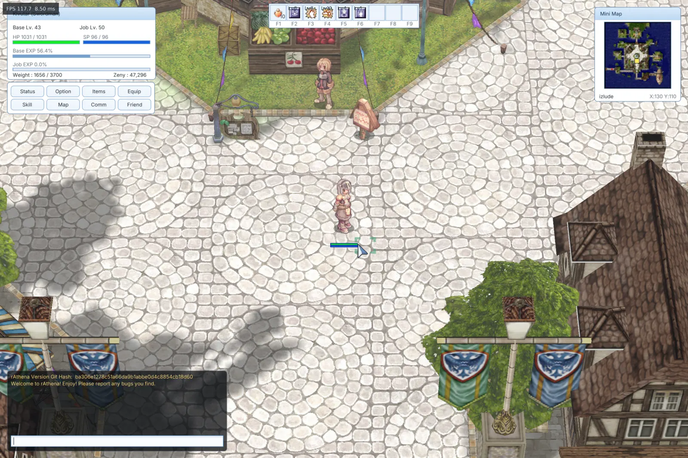
GoGPU, profiling, and retained rendering caches keep complex maps fast enough for high-refresh displays. We also track individual slow frames—not only averages—to reduce stalls and keep motion smooth.
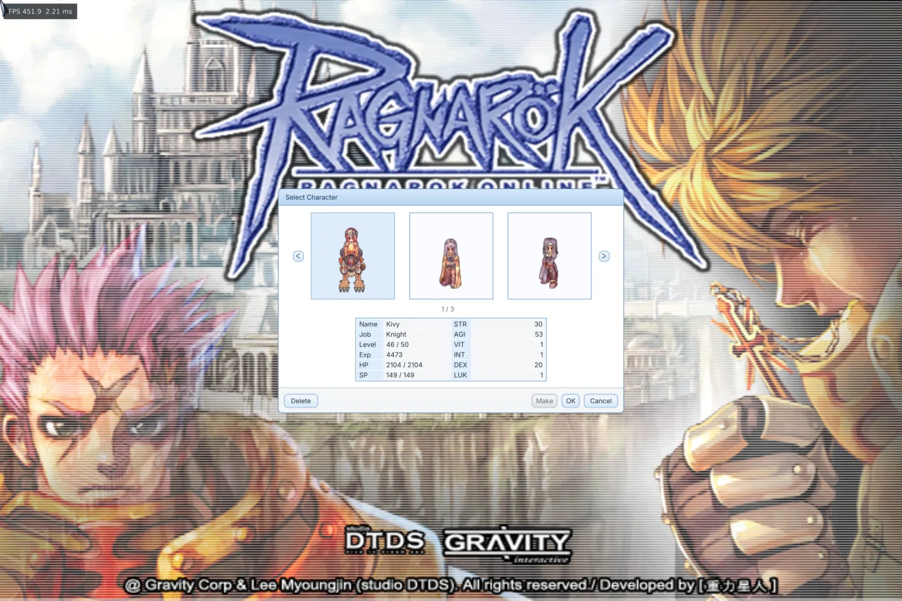
Goro focuses first on the 2008 experience, including the interface language used before Renewal. Its client-date-aware foundation is designed to leave room for newer versions later.
With enough contributors joining the effort, we would also like to support earlier eras, including the beta and alpha versions.
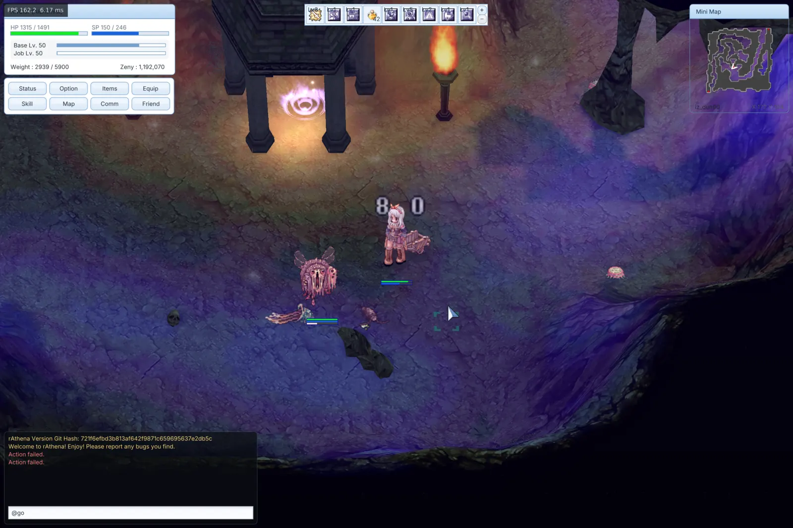
We put care into the details that shape how play feels: reference-matched timing, visual and sound effects, pathfinding behavior, and sprite animation.
There are still details to refine, and we need testers to help uncover them across more maps, classes, and servers. The project is on a good path, and we intend to keep improving it.
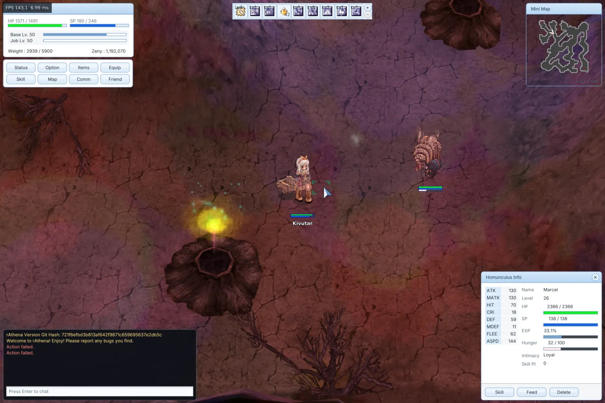
Homunculi and mercenaries support their original Lua AI interfaces, including default and custom USER_AI scripts. We have tested the system with AzzyAI, including its MirAI-compatible behavior.
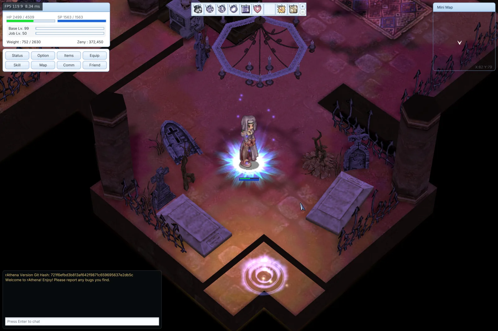
We recreate each effect we encounter as faithfully as our references allow—from map ambience, weather, skills, and status feedback to client-side details such as NPC warp portals and the level-99 player aura.
Any effect that does not match its reference is considered a bug and will be fixed.
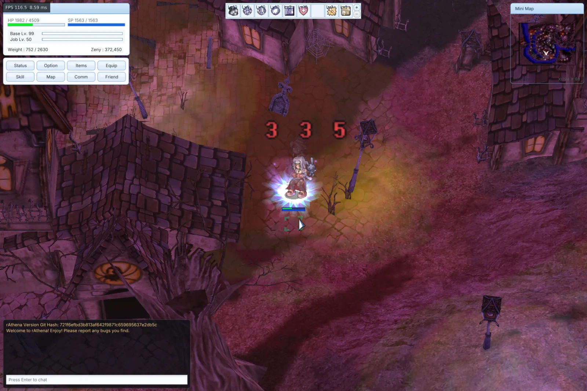
An optional Lua API exposes player state, enemies, items, attacks, skills, and looting for scriptable character automation. We use it for repeatable in-game testing, while the same hooks can provide auto-hunt behavior when desired.
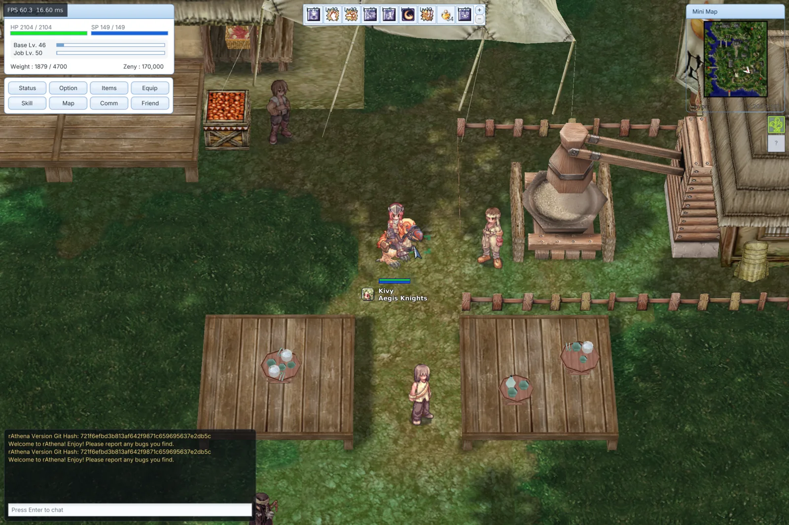
Map models play their authored keyframe animations, while 3D NPCs use skinned GR2 models with stand, move, attack, damage, and death animations.
Dedicated weather systems add map-specific atmosphere through clouds, fireworks, rain, snow, fog, and sky-color changes.
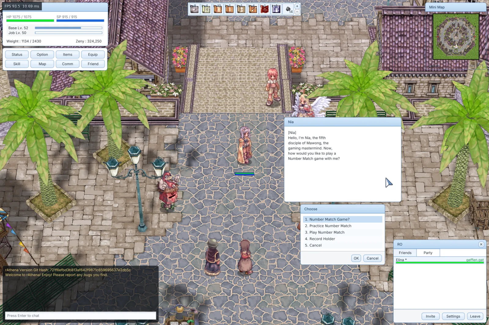
Class support covers every first class and most second and extended classes, including their skill trees, actions, and visual effects. Remaining class-specific behavior is being filled in as it is verified.
Gameplay playlist
Maps, combat, effects, UI, and all the small details that bring the world back to life.
Watch on YouTubeLatest stable release
Standalone builds are available for Windows, macOS, and Linux.
Windows 10 or later
Apple Silicon or Intel
Vulkan or GLES
Goro does not ship copyrighted game data. You’ll need a legally obtained compatible game data directory to play.
Setup guideBuild it with us
Explore the code, report a bug, or help recreate another corner of Midgard. Every contribution moves the client forward.
Contribute on GitHub{kind=link}
{kind=link}
{kind=link}
{kind=link}
{kind=link}
{kind=link}
{kind=link}
{kind=link}
{kind=link}